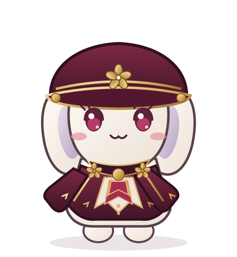

四季廳公式マスコットキャラクター
しきちょうちゃん
四季廳の広報活動をお手伝いする、元気いっぱいのマスコットです。
四季ヲ絶ヤス事勿レ。

CHARACTER PROFILE
基本プロフィール
- 名称
- しきちょうちゃん
- 区分
- 四季廳公式マスコットキャラクター
- 種別
- 動物をモチーフとしたキャラクター
- 性格
- 元気でおてんば。好奇心旺盛で、新しいことを知るのが大好き。
- 原案
- 花葉春月（漫画家名義：大窪晶与）
- 主な役割
- 広報・普及啓発活動
- 基本意匠
- 臙脂色・象牙色を基調とし、帽子に四季廳の花紋を配する。
- 活動媒体
- 公式ウェブサイト、広報刊行物、啓発資料その他の広報媒体
PURPOSE
制定趣旨
しきちょうちゃんは、四季廳の所管業務について、國民の理解と関心を深めることを目的として考案された公式マスコットキャラクターです。
四季神祇行政、神祇災害對策、現人神の保護・警備等に関する情報を、親しみやすく、わかりやすく伝える役割を担います。
本キャラクターは広報用に考案されたものであり、四季神祇又は現人神そのものを示すものではありません。
ORIGIN / 原案制作
誕生秘話
しきちょうちゃんの原案は、四季廳長官・花葉春月が制作しました。漫画家・大窪晶与としての創作活動で培った表現力を活かし、四季廳の意匠を取り入れた、親しみやすい動物型キャラクターとして考案されたものです。
原案の制作後、広報活動における活用を想定し、職員による検討を経て、四季廳公式マスコットキャラクターとして採用されました。
PUBLIC RELATIONS
広報・普及啓発活動
- 四季廳の組織及び所管業務の紹介
- 神祇災害對策に関する普及啓発
- 季節に応じた広報資料及びイラストの制作
- 広報用グッズ等への活用
MESSAGE
しきちょうちゃんからひとこと
「こんにちは！ しきちょうちゃんだよ！ 四季廳のおしごと、ぼくといっしょに知っていこうね！」